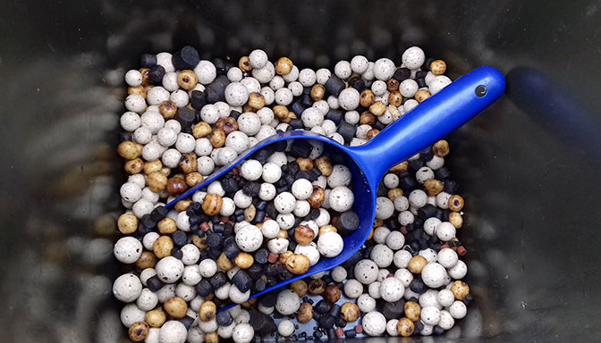
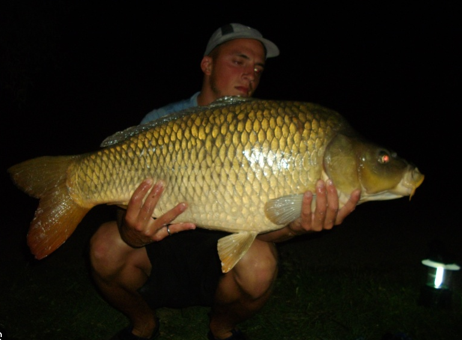
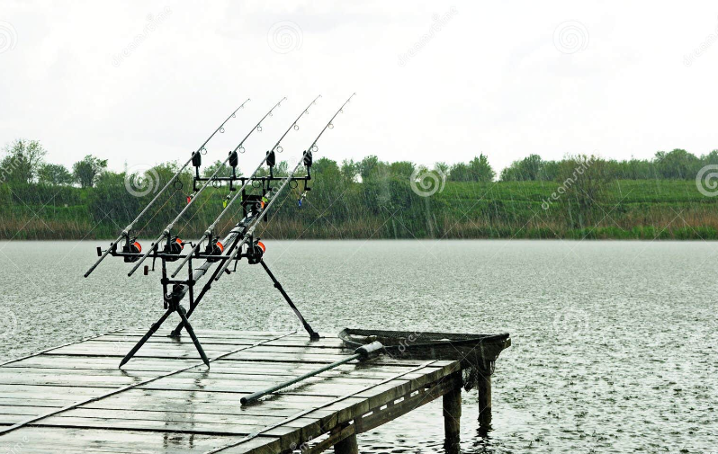

Présentation des Techniques la Pêche à la Carpe
L'amorçage
L'amorçage est une technique cruciale. Des quantités régulières d'appâts sont dispersées sur la zone de pêche pour attirer les carpes et les maintenir dans la région.
Choisir le bon moment
La pêche de la carpe est souvent plus réussie tôt le matin, en fin de journée ou pendant la nuit, lorsque les carpes sont plus actives.
Observation météorologique
Les conditions météorologiques peuvent grandement influencer le comportement des carpes. Une bonne observation des conditions météorologiques peut améliorer les chances de succès.
